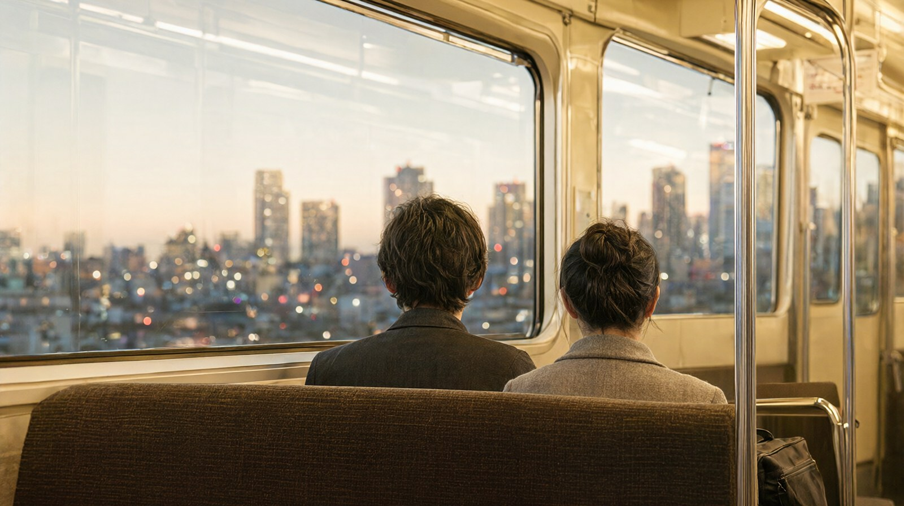

간토
도쿄를 중심으로 요코하마와 가마쿠라, 하코네까지 묶어 보는 권역입니다. 지금은 도쿄, 요코하마, 하코네 세 도시 허브가 모두 열려 있습니다. 기준일 2026-10-22.
1. 권역 한눈에 보기
- 한 줄 요약: 도쿄 하나만으로도 3박 4일은 충분하지만, 근교를 하루 끼워 넣으면 "도쿄 + 하루" 구성이 가장 효율적입니다.
- 이 권역이 맞는 사람: 큰 도시를 중심으로 움직이면서 박물관·테마파크·쇼핑을 함께 보고 싶은 가족. 큰 공항 두 곳(하네다, 나리타)에서 들어오는 여행.
- 덜 맞는 사람: 하루 이동이 적고 걷기만 하는 여행, 조용한 소도시나 온천을 원하는 여행.
- 추천 체류: 도쿄 3박 4일. 근교를 하루 넣으면 4박 5일.
- 이 권역의 특징: 공항이 두 곳이고 도심 구역이 넓어, 숙소 위치를 먼저 정하고 일정을 짜야 합니다.
2. 도시 비교
| 도시 | 한 줄 요약 | 비행시간 | 추천 일수 | 아이 적합도 | 예상 비용 (글 기준) |
|---|---|---|---|---|---|
| 도쿄 | 하네다·나리타 두 공항, 숙소 권역과 Suica 선택이 핵심인 가족 도시 | 인천·김포 출발 약 2시간 5분~2시간 40분 (항공편·방향별 편차) | 3박 4일 (근교나 디즈니까지 넣으면 4박 5일) | 높음 | 1인 약 60~115만원 |
| 요코하마 | 하네다·나리타 공항에서 들어와 도쿄에서 약 30분, 바다와 미나토미라이를 즐기는 항구 도시 | 직항 없음. 하네다·나리타 직항 이용 (인천·김포 출발 약 2시간 5분~2시간 40분) | 도쿄 3박 4일 중 당일 1일 (미나토미라이 야경까지 보려면 요코하마 1박 추가) | 높음 | 도쿄 3박 4일 기준 1인 약 60~115만원 (요코하마 당일 추가 약 3.8~5.0만원) |
| 하코네 | 온천과 아시노코 호수, 로망스카로 가는 간토의 대표 힐링 권역 | 직항 없음. 하네다·나리타 직항 이용 후 신주쿠 경유 (인천·김포 출발 약 2시간 5분~2시간 40분) | 도쿄 일정에 하코네 1박 추가 (도쿄 3박 4일 + 하코네 1박 = 4박 5일) | 높음 (산악 이동이 많아 체력 안배 필요) | 도쿄+하코네 4박 5일 기준 1인 약 80~145만원 (도쿄 3박 4일 약 60~115만원 + 하코네 1박 2일 추가 약 20~30만원) |
예상 비용은 도시마다 계산 범위가 달라 바로 비교할 수 없습니다. 각 허브의 예산 블록에서 포함 항목을 확인하세요. 도쿄 값은 3인 1실 가정이고 디즈니 입장권·쇼핑·통신비는 뺀 값입니다.
3. 도시 고르는 법
| 상황 | 추천 | 이유 |
|---|---|---|
| 첫 일본 방문, 이동이 귀찮을 때 | 도쿄만 3박 4일 | 공항에서 전철로 바로 들어가고 지하철만으로 돌아다닐 수 있음 |
| 아이가 좋아할 시설을 최우선으로 | 도쿄 + 디즈니 또는 팀랩 | 도쿄 3박 4일 일정에 이미 들어 있음 |
| 바다와 항구를 보고 싶을 때 | 도쿄 + 요코하마 당일 | 도쿄에서 약 25~30분 (JR 도카이도선) |
| 사원과 사찰당 산책을 하고 싶을 때 | 도쿄 + 가마쿠라 당일 | 도쿄에서 약 1시간 (가마쿠라 관광협회 공식). 편히 걸을 수 있는 크기 |
| 온천과 풍경, 느린 하루를 원할 때 | 도쿄 + 하코네 1박 | 특급 로망스카로 다녀올 수 있음. 다만 1박이면 이동 시간이 과해 다른 도시 묶음이 현실적 |
| 예산을 가장 세게 맞출 때 | 도쿄만 | 숙박이 권역에서 가장 비쌉니다 |
도쿄에서 도심 숙소를 정하는 기준과 권역별 비교는 도쿄 여행 가이드에 있습니다.
4. 권역 안 이동
4-1. 근교 당일치기
| 목적지 | 소요시간 | 요금 (어른) | 출처 |
|---|---|---|---|
| 하코네 (신주쿠 출발, 오다큐 로망스카) | 열차 종류에 따라 다름, 공식 시간표 확인 필요 | 티켓리스 특급료 1,150엔, 승차권 포함 1,270엔 (IC 결제 시 1,261엔) | 오다큐 로망스카 요금표 |
| 하코네 (하코네 프리패스, 신주쿠 출발) | 2일권 또는 3일권 | 2일권 성인 7,100엔·어린이 1,600엔, 3일권 성인 7,500엔·어린이 1,850엔 | 오다큐 하코네 프리패스 |
| 가마쿠라 | 도쿄에서 약 1시간 (가마쿠라 관광협회 공식) | JR 동일본 운임표 확인 필요 | 요금은 확인 필요 |
| 요코하마 | 도쿄에서 약 25~30분 (JR 도카이도선, 역탐 비공식) | JR 동일본 운임표 확인 필요, 역탐 기준 530엔(비공식) | 가족 이동 부담 낮음 |
- 하코네 프리패스는 공항 밖 개점에서 1개월 전부터 살 수 있고, 지정 구간에서 8개 교통수단을 무제한으로 탑승합니다. 특급 로망스카는 별도 특급권이 필요합니다. 소다카와라 선 구간은 왕복 1회만 탑승할 수 있습니다 (오다큐 공식).
- 어린이 특급료는 어른의 반액입니다. 6세 미만 유아가 특급 좌석을 쓰면 어린이 특급권과 승차권이 둘 다 필요합니다 (오다큐 공식).
- 프리패스 요금 표에는 신주쿠·요요기하라하라 출발 기준이 쓰여 있습니다. 다른 역에서 출발하면 가격이 다릅니다.
4-2. 공항에서 시내까지
하네다와 나리타에서 도쿄로 가는 수단별 요금, 소요시간, 막차는 하네다·나리타에서 도쿄 시내까지에 정리되어 있습니다. 간토 권역에서 공항은 도쿄뿐이므로 그 글만 보면 됩니다.
5. 추천 루트
루트 A: 도쿄 3박 4일 + 요코하마 당일
- 1일차: 하네다·나리타 도착, 숙소 체크인, 가볍게.
- 2일차: 도쿄 시내, Museo, 야타이.
- 3일차: 요코하마 당일(아침 출발), 저녁은 도쿄.
- 4일차: 도쿄 오전, 오후 출발.
- Day 3 이동 부담이 있으므로 그날 도쿄 일정 하나를 빼 두세요.
루트 B: 도쿄 3박 4일 + 가마쿠라 당일
- 가마쿠라는 도쿄에서 약 1시간이라 하루에 다녀오기 적당합니다.
- 대부(고엔조쿠), 하세데라, 후코 아라치 등 소수 지점을 걷는 동선이 좋습니다.
- 아이와 걷는 부담을 줄이려면 에노덴(에노시마 전철)을 한 번 타고, 에노시마까지 가는 일정은 뺄 수 있습니다.
- 인파가 많습니다. 가마쿠라 관광협회가 제공하는 PIO 혼잡 상황 안내를 미리 보면 자리를 잡기 쉽습니다.
루트 C: 도쿄 4박 5일 + 하코네 1박
- 도쿄 3박 뒤 하코네로 1박 이동하고, 마지막 날 도쿄로 돌아와 출발.
- 이 구성은 이동이 3번이라 아이가 있으면 피곤합니다. 도쿄 3박 4일 일정 글은 도쿄 3박 4일 가족 일정을 참고하세요.
- 하코네를 다녀오는 것만으로 끝내면 프리패스보다 특급권 단독이 저렴할 수 있습니다. 출발역이랑 무엇을 탈지 먼저 계산하세요.
6. 시즌 가이드
- 벚꽃은 보통 3월 말~4월 초, 단풍은 11월 중순~12월 초에 옵니다. 연도마다 차이가 있고 정확한 개화일은 일본기상청의 개화·연작 예측 발표를 따릅니다. 수치는 기상청 평년값과 각 지역 공지의 확인이 필요해 여기서 확정하지 않습니다.
- 6월과 7월은 습하고 덥습니다. 도쿄 시내 야외 일정은 오전과 저녁으로 나눌 수 있습니다.
- 1월 2일~3일은JR 사절 성수기입니다. 이동 인원이 많으면 미리 예매하세요.
- 실질은 이 사이트가 다른 메뉴에서 다룬 출국 전 체크리스트를 보세요.
7. 권역 공통 주의
- 2026년 11월 6일~8일, JR 터널 공사로 나리타 익스프레스 열차 운행이 바뀝니다. 11월 7일은 신주쿠·오후나 구간이 중단되고, 11월 6일 저녁과 11월 8일 오전 열차는 도쿄역까지만 운행하는 편이 있습니다. 공항 이동 글에 열차별 상세가 있습니다.
- 도쿄도 숙박세는 2027년 4월 1일부터 숙박료의 3%로 바뀝니다. 지금은 1인 1박 1만 엔 이상 1만 5천 엔 미만이면 100엔, 1만 5천 엔 이상이면 200엔입니다.
- 미라이칸은 2026년 10월 1일부터 2027년 4월 22일까지 휴관입니다. 도쿄 일정에서 제외되어 있습니다.
- 지브리 미술관은 매월 10일 10시(일본 시간)에 다음 달 분이 판매됩니다. 11월 휴관일은 4일~18일과 24일, 12월은 1일·8일·15일·22일과 27일~31일입니다.
- 팀랩 플래닛은 8시~22시(마지막 입장 21시)이고, 11월 5일과 12월 3일은 휴관입니다.
- JR 동일본의 역별 운임표가 이 사이트에서 열리지 않아 도쿄~요코하마, 도쿄~가마쿠라 구간 요금은 '확인 필요'로 뒀습니다.
8. 이 권역의 글
- 도쿄 3박 4일 가족 일정 (일정)
- 하네다·나리타에서 도쿄 시내까지 (이동)
9. FAQ
Q. 도쿄만 3박 4일로 충분한가요? 처음 가는 가족이면 충분합니다. 가까운 근교는 하루를 더 쓰기보다 도쿄 안에서 여유 있게 보내는 편이 덜 피곤합니다.
Q. 하코네는 하루 다녀올 수 있나요? 특급으로 다녀올 수 있지만 왕복 이동이 길어 아이와 함께라면 체력이 듭니다. 온천에 묵으려면 1박이 낫습니다.
Q. 근교를 넣으면 숙소를 옮겨야 하나요? 옮기지 않는 편이 낫습니다. 도쿄 숙소에서 당일 다녀오는 구성이 이동이 적습니다.
Q. 도쿄 숙소는 어느 권역이 편한가요? 도쿄 허브의 숙소 권역 표를 보세요. 공항 도착일과 마지막 날 이동만 편한 쪽을 골라야 합니다.
Q. 11월에 도쿄을 가는데 공사 때문인 것 같아서 걱정됩니다. 11월 6일~8일 나리타 익스프레스 운행이 바뀝니다. 공항 이동 글의 열차별 내용을 확인하고, 11월 7일 신주쿠 도착 편이 필요하면 다른 날로 옮기세요.
10. 앞으로 추가할 도시
이 권역의 모든 예정 도시가 공개되었습니다.
11. 확인 필요 항목, 공식 출처
확인 필요
- 도쿄~요코하마, 도쿄~가마쿠라 JR 운임 (JR 동일본 역별 운임표 접속 실패)
- 하코네 로망스카 신주쿠~하코네유본 구간 소요시간 (오다큐 시간표 미확인)
- 가마쿠라 무료 패스 종류와 가격 (가마쿠라 공식 안내에 링크만 있어 미확인)
- 요코하마·하코네 숙소 1박 가격, 식당 가격
- 도쿄 근교 도시별 비행시간과 예산 비교 (도시 글 미작성)
공식 출처
- 오다큐 로망스카 요금표: https://www.odakyu.jp/romancecar/charges/
- 오다큐 하코네 프리패스: https://www.odakyu-freepass.jp/hakone/buy.html
- 가마쿠라 관광협회 접근 안내: https://www.trip-kamakura.com/access/
- 가마쿠라 혼잡 상황 안내: https://www.konzatsu-kamakura.jp/
- 이 사이트의 도쿄 허브와 공항 이동 글(본문 안 출처 링크)